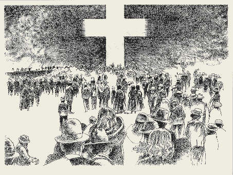

Daniel by Bill Diehl, editor of PresentTruthMag.org
Introduction: Daniel's prophecy was completely fulfilled by our Lord Jesus Christ in His virgin birth, sinless life, atoning death on the cross, and His ascension into heaven where He reigns and judges the world as King of kings and Lord of lords. The New Testament is the full and complete explanation of all the prophetic promises of the Old Testament, including the book of Daniel.
Standing as "a covenant of the people" (Isaiah 42:6), Christ fulfilled the promise which the people of Israel had pledged, "All that the Lord hath spoken we will do." This obedient, suffering Servant stood before God as Israel, to do for Israel – in Israel's name and on Israel's behalf – that which Israel was utterly unable to do. "Then said He, Lo, I come to do Thy will, 0 God." Heb. 10:9. He did the will of God when it was the delight of His heart, His daily meat and drink. He did the will of God when that will was an exceedingly bitter cup. Though confronted by apparent failure, defeat and, at the end, the darkness and blackness of eternal night, He plodded on. He "became obedient unto death, even the death of the cross. Phil. 2:8. Finally, with the full consciousness that He had drunk the cup of suffering on behalf of His people and had finished His work, He addressed His Father, saying, "It is finished." He had kept covenant faith. In Him Israel had carried out all that the law (the terms of the covenant) demanded.
In His life Israel had kept all the precepts of the law, and in His death Israel had born all the curses of the law (Gal. 3:10-13). In dying, Christ had fulfilled Israel's promises to God. His great work accomplished, He rested in Joseph's tomb, waiting for God to fulfill His side of the covenant. In raising Christ from the dead and giving Him power and glory, God fulfilled His covenant promise. To the Jews Paul positively declared "that what God promised to the fathers (including Daniel), this He has fulfilled to us their children by raising Jesus." Acts 13:32-33, R.S.V. In his great Pentecostal discourse the apostle Peter declared that God raised Christ from the dead and gave to Him "the promise of the Holy Ghost." Acts 2:33. Just as Jesus gave a life of obedience to God on behalf of His people, so in His resurrection He received the promise of the Holy Spirit on behalf of His people. So Peter declared to Israel,". . . the promise is to you and to your children and to all that are far off, every one whom the Lord our God calls to Him." Acts 2:39, R.S.V
In Isaiah 42, 44, and 53 the Servant of Yahweh is sometimes called Jacob (the nation of Israel), and other times it is clearly the person of Christ who is referred to. This shows us that Christ, as the suffering Servant, was representing and acting for Israel. Thus, Christ is the Mediator of the covenant. Through Him and in Him Israel fulfilled all her promises to God. All this was completed by Christ's death on the cross. Also, through Him and in Him God fulfilled all His promises to Israel. All this was accomplished in Christ's resurrection from the dead. God's promise to Abraham not only included Jews of physical descent, for Abraham was plainly told, ". . . in thy Seed [Christ — Gal. 3:16] shall all the families of the earth be blessed." Gen. 28:14; cf. 12:3. "...Gentiles ...being aliens from the commonwealth of Israel, and strangers from the covenants of promise ...should be fellow heirs, and of the same body, and partakers of His promise in Christ by the gospel ... " Eph. 2:11-12; 3:6. Thus, Paul declared to the Corinthians, "…all the promises of God find their “Yes” in Him." 2 Cor. 1:20, R.S.V. That is to say, when God raised Christ from the dead, He fulfilled not only His promises to Israel but every promise which He ever made to the human family since time began. In Christ He has blessed us with every conceivable blessing (Eph. 1:3). Unless we can take out our pen and write "Fulfilled" across every one of the three thousand promises of the Old Testament, we deny “the finished work of Jesus Christ".
By now it should be very clear that the substance of every promise was Jesus Christ. When God promised Abraham a seed, He was really promising Him Jesus Christ (Gal. 3:16). When He promised peace, wisdom and power, He was really promising Jesus Christ (see Acts 3:25-26).
Now we can approach our review of the prophecy of Daniel
Daniel 2 was fulfilled by Christ. The "great image" prophetic outline of Daniel 2 refers to the rise and fall of the empires of Babylon (head of gold), Medo-Persia (chest of silver), Greece (torso of bronze), and Rome (legs of iron with feet and toes of iron and clay) The "rock" which then strikes the "great image" at its feet was fulfilled by our Lord Jesus Christ. The restoration of the kingdom of God commenced at Christ's baptism in the Jordan River . He was born of the virgin Mary, lived a sinless life, and gave Himself as an offering for our sins. After His glorious resurrection, He ascended into heaven and began to reign on the throne of David as our Mediator, King, Lawgiver, and High Priest after the order of Melchesidek. The kingdom of God in the earth that was lost at the fall of Adam has been re-established and inaugurated in Christ. In the sinless life and atoning death of our Lord Jesus Christ, all that Adam lost has been redeemed in Christ. The complete visible revelation of the kingdom of God will be fully realized and revealed at the Final Trumpet at the end of the age.
1 Corinthians 15:20-25 But Christ has indeed been raised from the dead, the firstfruits of those who have fallen asleep. 21 For since death came through a man, the resurrection of the dead comes also through a man. 22 For as in Adam all die, so in Christ all will be made alive. 23 But each in his own turn: Christ, the firstfruits; then, when He comes, those who belong to Him. 24 Then the end will come, when He hands over the kingdom to God the Father after He has destroyed all dominion, authority and power. 25 For He must reign until He has put all His enemies under his feet. 26 The last enemy to be destroyed is death.
The glory of His now invisible kingdom will be fully revealed at His coming in the clouds of heaven at the end of the world. But we must with absolute certainty declare that Christ's kingdom has been now established and that the Stone cut out without human hands has already struck the great image of a man at its feet. Christ now reigns over the kingdoms of this world and the full and open disclosure of His kingdom will be revealed at the last trumpet. Christ alone is worthy to reign as King of Kings and Lord of Lords!!! The "last days" have already arrived in the person of Jesus Christ as Lord and King and Judge.
Daniel 7 was also completely fulfilled by Christ. The prophetic outline of Daniel 7 refers again to the rise and fall of the empires of — Babylon (the lion), —Medo-Persia (the bear), —Greece (the leopard), —Rome (the dreadful and terrible ten horned Beast).
Imperial Rome was this fourth beast with its ten horns.(Babylon, Medo-Persia and Greece are the "three horns" that were plucked up when what remained of their kingdoms was absorbed into the Roman Empire) And then with its "little horn" which "came up" Rome in conjunction with the rulers of the Israel, the Sanhedrin, waged spiritual warfare against Christ for the 3 and 1/2 years of His messianic ministry which ended in the crucifixion of Christ upon the cross of Calvary. But because of His sinless life and atoning sacrifice on the cross, His glorious resurrection, and His regal enthronement in heaven as King of Kings, the Lord Jesus Christ has overcome and defeated all of the Satanic principalities and powers of this world.
Heb.10:12-13 "But this Man, after He had offered one sacrifice for sins forever, sat down at the right hand of God, 13 from that time waiting till His enemies are made His footstool."
Christ's kingdom has cast down all other thrones as the rightful ruler of the world. The "Son of Man" has been given "dominion, and glory, and a kingdom, that all people, nations, and languages, should serve him: his dominion is an everlasting dominion, which shall not pass away, and his kingdom that which shall not be destroyed." Christ's judgment of the nations began at His ascension. (see also: Rev. 4 and Rev. 14) When our Lord Jesus Christ's walked the dusty street of Israel, Satan's kingdom in the earth was manifested in the form of the Roman Empire's Herodian rule of the province of Palestine and Jerusalem. This union of Rome and the Sanhedrin constituted the "little horn" which waged continual conflict and warfare with Christ, but Jerusalem along with its unbelieving stiff-necked priesthood and people was eventually "taken away" and totally destroyed in AD 70 by the armies of Rome. Even after the decline and fall of the Roman empire in the fifth century of the Christian era, this "little horn" of the Roman empire would eventually morph into the Roman Catholic papacy as an "image to the beast" to persecute true believers of Christ. (see: Revelation chapter 13)
In the proclamation of the gospel to all the world, every nation, kindred, tongue, and people are being judged by the gospel for the verdict of either "life" or "death". The "hour of God's judgment" has commenced in the gospel of Christ.
Revelation 14:6-7 Then I saw another angel flying in midair, and he had the eternal gospel to proclaim to those who live on the earth-- to every nation, tribe, language and people. 7 He said in a loud voice, "Fear God and give him glory, because the hour of his judgment has come. Worship him who made the heavens, the earth, the sea and the springs of water."
The justification of repentant sinners is by God's unmerited grace alone through faith in the sinless life and atoning death of the Lord Jesus Christ, the sin-bearer for the sins of the world. In God's merciful forgiveness and acquittal of the repentant believing sinner, the verdict of the final judgment day is rendered in the present. Today is the day of salvation. The justified believer who trusts in Christ as his Savior and Lord to the end will not be ashamed at His coming in power and great glory when the unbelieving world will be destroyed by the brightness of His coming. This is the meaning of Daniel 7:9-14 and its complete fulfillment and New Testament counterpart in Revelation 4:1-6; 5:6-14.
Daniel 7:9-14 I beheld till the thrones were cast down, and the Ancient of days did sit, whose garment was white as snow, and the hair of his head like the pure wool: his throne was like the fiery flame, and his wheels as burning fire. A fiery stream issued and came forth from before him: thousand thousands ministered unto him, and ten thousand times ten thousand stood before him: the judgment was set, and the books were opened. I beheld then because of the voice of the great words which the horn spake: I beheld even till the beast was slain, and his body destroyed, and given to the burning flame."As for the rest of the beasts, they had their dominion taken away, yet their lives were prolonged for a season and a time. I was watching in the night visions,
And behold, One like the Son of Man, Coming with the clouds of heaven! He came to the Ancient of Days, And they brought Him near before Him. Then to Him was given dominion and glory and a kingdom, That all peoples, nations, and languages should serve Him. His dominion is an everlasting dominion, Which shall not pass away, And His kingdom (is) the one Which shall not be destroyed.
See also: Revelation 4:1-6, 9 After these things I looked, and behold, a door standing open in heaven. And the first voice which I heard was like a trumpet speaking with me, saying, "Come up here, and I will show you things which must take place after this." Immediately I was in the Spirit; and behold, a throne set in heaven, and One sat on the throne. 3 And He who sat there was like a jasper and a sardius stone in appearance; and there was a rainbow around the throne, in appearance like an emerald. 4 Around the throne were twenty-four thrones, and on the thrones I saw twenty-four elders sitting, clothed in white robes; and they had crowns of gold on their heads.
5 And from the throne proceeded lightnings, thunderings, and voices. Seven lamps of fire were burning before the throne, which are the seven Spirits of God. 6 Before the throne there was a sea of glass, like crystal. And in the midst of the throne, and around the throne, were four living creatures full of eyes in front and in back.....9 Whenever the living creatures give glory and honor and thanks to Him who sits on the throne, who lives forever and ever,
See also: Revelation 5:6-14 And I looked, and behold, in the midst of the throne and of the four living creatures, and in the midst of the elders, stood a Lamb as though it had been slain, having seven horns and seven eyes, which are the seven Spirits of God sent out into all the earth. Then He came and took the scroll out of the right hand of Him who sat on the throne.
Now when He had taken the scroll, the four living creatures and the twenty-four elders fell down before the Lamb, each having a harp, and golden bowls full of incense, which are the prayers of the saints. And they sang a new song, saying: "You are worthy to take the scroll, And to open its seals; For You were slain, And have redeemed us to God by Your blood Out of every tribe and tongue and people and nation, And have made us kings and priests to our God; And we shall reign on the earth." Then I looked, and I heard the voice of many angels around the throne, the living creatures, and the elders; and the number of them was ten thousand times ten thousand, and thousands of thousands, saying with a loud voice:
"Worthy is the Lamb who was slain To receive power and riches and wisdom, And strength and honor and glory and blessing!" And every creature which is in heaven and on the earth and under the earth and such as are in the sea, and all that are in them, I heard saying: "Blessing and honor and glory and power Be to Him who sits on the throne, And to the Lamb, forever and ever!" Then the four living creatures said, "Amen!" And the twenty-four elders fell down and worshiped Him who lives forever and ever.
Daniel 8 was fulfilled by Christ. The taking away of the "daily sacrifice " by the "little horn" was fulfilled in the crucifixion of our Lord. Christ is the true "daily", the eternal sacrifice for sin of which the Old Testament daily sacrifices and continual burnt offerings for sin were merely a shadow. It was Rome through her representative, Herod the governor of Palestine appointed by Rome, who was the "little horn" of Daniel 7 and 8. In Daniel's apocalyptic symbolism, Christ is the "sanctuary" or temple which was "cast down". He is the "truth" which was cast to the ground. He is the true "daily", the sin offering, which was "taken away".
Jesus answered and said unto them, Destroy this temple, and in three days I will raise it up. 20 Then said the Jews, Forty and six years was this temple in building, and wilt thou rear it up in three days? 21 But he spake of the temple of his body. John 2:19-21
The "sanctuary" was "restored" to its rightful state and vindicated at Christ's glorious resurrection, ascension into heaven, and enthronement as King of Kings and Lord of Lords. This is the meaning of the apocalyptic symbolism of "the cleansing of the sanctuary" mentioned in Daniel 8:14. He now reigns and judges the nations.
Daniel 8:9-14 KJV And out of one of them came forth a little horn, which waxed exceeding great, toward the south, and toward the east, and toward the pleasant land. And it waxed great, even to the host of heaven; and it cast down some of the host and of the stars to the ground, and stamped upon them. Yea, he magnified himself even to the prince of the host, and by him the daily sacrifice was taken away, and the place of his sanctuary was cast down. And an host was given him against the daily sacrifice by reason of transgression, and it cast down the truth to the ground; and it practiced, and prospered. Then I heard one saint speaking, and another saint said unto that certain saint which spake, How long shall be the vision concerning the daily sacrifice, and the transgression of desolation, to give both the sanctuary and the host to be trodden under foot? And he said unto me, Unto two thousand and three hundred days; then shall the sanctuary be cleansed.
Daniel 8:13-14 NAB I heard a holy one speaking, and another said to whichever one it was that spoke, "How long shall the events of this vision last concerning the daily sacrifice, the desolating sin which is placed there, the sanctuary, and the trampled host?" 14 He answered him, "For two thousand three hundred evenings and mornings; then the sanctuary shall be purified."
Daniel 8:13-14 NIV Then I heard a holy one speaking, and another holy one said to him, "How long will it take for the vision to be fulfilled-- the vision concerning the daily sacrifice, the rebellion that causes desolation, and the surrender of the sanctuary and of the host that will be trampled underfoot?" 14 He said to me, "It will take 2,300 evenings and mornings; then the sanctuary will be reconsecrated."
Daniel 8:14 RSV And he said to him, "For two thousand and three hundred evenings and mornings; then the sanctuary shall be restored to its rightful state."
Daniel 9 was fulfilled by Christ. The prophetic "seventy weeks" is a play on the "seventy years" of captivity spoken of by the prophet Jeremiah. Just as literal Israel was restored at the end of the seventy years of Babylonish captivity, so God's true spiritual kingdom of Christ would be restored and commence at the end of "seventy sevens" (70 x 7 = 490) or 490 years. This restoration was to take place within the final "week" (7 years) of the seventy weeks (490 years). The decree of Cyrus king of Persia (see: 2 Chron 36:22, Ezra 1:1-9, Isa 45:1-13 Isa 48:13-15) was given to restore Jerusalem and God's holy temple after the seventy years of Babylonish captivity. The three commands of Cyrus, Darius, and Artexerxes to rebuild Jerusalem are found in the book of Ezra.
These three commands were finally accomplished in the decree of Artexerxes by the date of 457 BC. From this date of Artexerxes' decree in 457 BC to the year of AD. 34 there are exactly 490 years. Within the last "week" of the seventy weeks, AD 28 to AD 34 the Messianic mission of Jesus Christ was fulfilled. Within the 2520 days of this final week (7 years X 360 days per year = 2520 days) 1260 of these days were allotted for the incarnate Christ to proclaim that the "time was fulfilled" for the kingdom of God to be established and Satan's kingdom to be over-thrown.
Mark 1:14-15 KJV Now after John was arrested, Jesus came into Galilee, preaching the gospel of God, and saying, "The time is fulfilled, and the kingdom of God is at hand; repent, and believe in the gospel."
Christ's sinless life and atoning death on the cross "finished the transgression", "made an end of sins", made "reconciliation for iniquity", and brought in "everlasting righteousness". He "sealed up the vision and prophecy", and He was "anointed" as Messiah. He "confirmed" or ratified the everlasting covenantal promises of God and then He was "cut of" as He made His atoning substitutionary death on the cross for the sins of the world. But that is not the end of the story.
Also within that prophetic 7 year "week" of 2520 days there was contained the apocalyptic promise that we found back in Daniel 8:14 that within 2300 days the temple of Christ's body that had been offered for the sins of the world would be "restored" through His glorious resurrection, ascension into heaven, and enthronement in heaven to reign as King of Kings and intercede for His people as their High Priest. At the end of this prophetic week, because of the despicable unrepented-of sin of the Sanhedrin in conjunction with Imperial Rome as the "desolator" against the Messiah, Israel would be cut off as the covenantal people of God and would ultimately be punished forty years later by the destruction of their city and temple in A.D. 70. The most horrible crime in all of human history, by the true "terrible desolator", was the condemnation and crucifixion of the Lord Jesus Christ by His own covenantal people.
Seventy weeks are determined upon thy people and upon thy holy city, to finish the transgression, and to make an end of sins, and to make reconciliation for iniquity, and to bring in everlasting righteousness, and to seal up the vision and prophecy, and to anoint the most Holy. Know therefore and understand, that from the going forth of the commandment to restore and to build Jerusalem unto the Messiah the Prince shall be seven weeks, and threescore and two weeks: the street shall be built again, and the wall, even in troublous times.
And after threescore and two weeks shall Messiah be cut off, but not for himself: and the people of the prince that shall come shall destroy the city and the sanctuary; and the end thereof shall be with a flood, and unto the end of the war desolations are determined. And he shall confirm the covenant with many for one week: and in the midst of the week he shall cause the sacrifice and the oblation to cease, and for the overspreading of abominations he shall make it desolate, even until the consummation, and that determined shall be poured upon the desolate. Daniel 9:24-27
Daniel 10, 11, and 12 were fulfilled by Christ
Now regarding the King of the North and the King of the South in Daniel 10-12: Daniel sets the background for his prophecy in chapters 2, 7, 8, and 9 as the four kingdoms of Babylon, Medo-Persia, Greece, and Rome which shall rule over the land of Israel unto the coming of the Messiah, the Lord Jesus Christ.
In Daniel 10, Daniel is told that Michael, the pre-incarnate Christ and the ruler of the angels (arch-angel), is battling to defeat the king of Persia so that the kingdom of Greece shall appear. After Persia would be defeated the kingdom of Greece would arise. Then the kingdom of Greece would be eventually divided into four parts. One of the only two surviving factions of these original four factions is called the "king of the south" and the other surviving faction is called "the king of the north". This "king of the south" faction will fight against the "king of the north" faction.
These two remaining factions of the divided empire of Greece fought back and forth until eventually the southern faction was defeated and the northern faction emerged as the dominant power which ultimately was absorbed into the Roman Empire. It is the fourth empire of Rome (see Daniel 2) which emerges as the dominant world power and rules the land of Israel at the time of Christ. It is Imperial Rome, allied with the leaders of Israel, which would wage spiritual warfare against the holy covenant and place the "abomination that makes desolate" and "take away the daily".
Daniel 11:30......therefore he (the King of the North) shall be grieved, and return, and have indignation against the holy covenant: so shall he do; he shall even return, and have intelligence with them (the Sanhedrin) that forsake the holy covenant. 31 And arms shall stand on his part, and they shall pollute the sanctuary of strength, and shall take away the daily sacrifice , and they shall place the abomination that maketh desolate.
32 And such as do wickedly against the covenant shall he corrupt by flatteries: but the people that do know their God shall be strong, and do exploits. 33 And they that understand among the people shall instruct many: yet they shall fall by the sword, and by flame, by captivity, and by spoil, many days. 34 Now when they shall fall, they shall be holpen with a little help: but many shall cleave to them with flatteries.
35 And some of them of understanding shall fall, to try them, and to purge, and to make them white, even to the time of the end: because it is yet for a time appointed. 36 And the king shall do according to his will; and he shall exalt himself, and magnify himself above every god, and shall speak marvelous things against the God of gods, and shall prosper till the indignation be accomplished: for that that is determined shall be done. 37 Neither shall he regard the God of his fathers, nor the desire of women, nor regard any god: for he shall magnify himself above all. 38 But in his estate shall he honor the God of forces: and a god whom his fathers knew not shall he honor with gold, and silver, and with precious stones, and pleasant things.
39 Thus shall he do in the most strong holds with a strange god, whom he shall acknowledge and increase with glory: and he shall cause them to rule over many, and shall divide the land for gain.
It is Imperial Rome in conjunction with the Jewish leadership who had "forsaken the holy covenant" (see verse 30) which conspired together to crucify the Son of God (take away the daily). The "daily sacrifice" in the temple service prefigured the atoning death of Christ who was to come into the world to be the true offering for sin (see Daniel 9:26-27) So in brief summary, the "king of the north" represents the power which eventually emerged from Greece and was absorbed into the Imperial Roman Empire which in conjunction with the Jewish leadership made war against the holy covenant and crucified the Lord Jesus Christ.
The "Abomination of Desolation" The murder of the Son of God was mankind's greatest sin in all of history and this horrendous act was performed by the "abominable desolator" in the crime of "taking away of the daily" by Imperial Rome together with the Sanhedrin.
It is Christ who fulfilled all the terms of God's everlasting covenant in the final "week" of the "seventy weeks" prophecy as Christ was "to finish the transgression, and to make an end of sins, and to make reconciliation for iniquity, and to bring in everlasting righteousness, and to seal up the vision and prophecy, and to anoint the most Holy." (Daniel 9:24).
It is Christ who in Daniel 12:1 is called "Michael", "the great prince who stands for the children of thy people" who at that time"stands up". The phrase "stands up" means for Him take saving action and to come into the world as the promised Messiah and fulfill His mission as Lord and Savior of His people in fulfillment of His promise in Genesis 3:15 to "crush the Serpent's head". (This fulfillment of Christ's mission is the entire message of Paul's epistle to the Hebrews). The great "time of trouble" (Daniel 12:1) began with the commencement of the Christian era and will end with the second coming of Christ. (see: Matt 24).
The entire book of Daniel is thus a prophecy of the establishment of the "kingdom of God" and this is the blessed record of the four gospels of Matthew, Mark, Luke, and John. Daniel has been completely fulfilled in Christ's doing and dying and ascension into heaven as King of Kings and Lord of Lord. He reigns in heaven as our Priest / King until He makes all His enemies His footstool.
These chapters depict in apocalyptic metaphor and symbolism the great historic struggle to bring about the kingdom of God against the wishes of the evil kingdoms of this world as they make war with each other and the "prince of the host", Michael, the Ruler and Prince (Hebrew: chief or great prince) of the angels. But in the "last days" Michael has prevailed and will continue to prevail over His enemies. Gabriel the angel tells Daniel that at the "time of the end" all these things will be accomplished. The "time of the end" and the "last days" began at the incarnation of the Son of God in A.D.27. It is the faithful remnant Christian church, spiritual Israel, which is horribly persecuted and endures and continues to endure "a time of trouble such as never before" (see Dan 12, Matt 24).
Daniel 12:1-13 KJV And at that time shall Michael stand up, the great prince which standeth for the children of thy people: and there shall be a time of trouble, such as never was since there was a nation even to that same time: and at that time thy people shall be delivered, every one that shall be found written in the book. And many of them that sleep in the dust of the earth shall awake, some to everlasting life, and some to shame and everlasting contempt. And they that be wise shall shine as the brightness of the firmament; and they that turn many to righteousness as the stars for ever and ever.
But thou, O Daniel, shut up the words, and seal the book, even to the time of the end: many shall run to and fro, and knowledge shall be increased. Then I Daniel looked, and, behold, there stood other two, the one on this side of the bank of the river, and the other on that side of the bank of the river. And one said to the man clothed in linen, which was upon the waters of the river, How long shall it be to the end of these wonders? And I heard the man clothed in linen, which was upon the waters of the river, when he held up his right hand and his left hand unto heaven, and sware by him that liveth for ever that it shall be for a time, times, and an half; and when he shall have accomplished to scatter the power of the holy people, all these things shall be finished.
And I heard, but I understood not: then said I, O my Lord, what shall be the end of these things? And he said, Go thy way, Daniel: for the words are closed up and sealed till the time of the end. Many shall be purified, and made white, and tried; but the wicked shall do wickedly: and none of the wicked shall understand; but the wise shall understand. And from the time that the daily sacrifice shall be taken away, and the abomination that maketh desolate set up, there shall be a thousand two hundred and ninety days. Blessed is he that waiteth, and cometh to the thousand three hundred and five and thirty days. But go thou thy way till the end be: for thou shalt rest, and stand in thy lot at the end of the days.
Daniel's book was ordered to be sealed up by Gabriel!! Daniel's book was sealed up until the "time of the end". However, the gospel of the Lord Jesus Christ which is revealed in the proclamation of the New Testament has completely unsealed the book of Daniel. The "time of the end" began with the proclamation by the angel Gabriel of the inauguration of the kingdom of Christ to Zechariah, Elizabeth, and the virgin Mary. It is Gabriel the angel who ordered Daniel to seal up the prophecy of Daniel and it is Gabriel who unsealed the mystery of Daniel's prophecy!
Daniel 8:16 16 And I heard a man's voice between the banks of the Ulai, and it called, "Gabriel, make this man understand the vision.".....26 The vision of the evenings and the mornings which has been told is true; but seal up the vision, for it pertains to many days hence."
Daniel 12:4-13 4 But you, Daniel, shut up the words, and seal the book, until the time of the end. Many shall run to and fro, and knowledge shall increase." 5 Then I Daniel looked, and behold, two others stood, one on this bank of the stream and one on that bank of the stream. 6 And I said to the man clothed in linen, who was above the waters of the stream, "How long shall it be till the end of these wonders?" 7 The man clothed in linen, who was above the waters of the stream, raised his right hand and his left hand toward heaven; and I heard him swear by him who lives for ever that it would be for a time, two times, and half a time; and that when the shattering of the power of the holy people comes to an end all these things would be accomplished. 8 I heard, but I did not understand. Then I said, "O my lord, what shall be the issue of these things?" 9 He said, "Go your way, Daniel, for the words are shut up and sealed until the time of the end. 10 Many shall purify themselves, and make themselves white, and be refined; but the wicked shall do wickedly; and none of the wicked shall understand; but those who are wise shall understand. 11 And from the time that the continual burnt offering is taken away, and the abomination that makes desolate is set up, there shall be a thousand two hundred and ninety days. 12 Blessed is he who waits and comes to the thousand three hundred and thirty-five days. 13 But go your way till the end; and you shall rest, and shall stand in your allotted place at the end of the days."
Luke 1:5-19 5 In the days of Herod, king of Judea, there was a priest named Zechariah, of the division of Abijah; and he had a wife of the daughters of Aaron, and her name was Elizabeth. 6 And they were both righteous before God, walking in all the commandments and ordinances of the Lord blameless. 7 But they had no child, because Elizabeth was barren, and both were advanced in years. 8 Now while he was serving as priest before God when his division was on duty, 9 according to the custom of the priesthood, it fell to him by lot to enter the temple of the Lord and burn incense. 10 And the whole multitude of the people were praying outside at the hour of incense. 11 And there appeared to him an angel of the Lord standing on the right side of the altar of incense. 12 And Zechariah was troubled when he saw him, and fear fell upon him. 13 But the angel said to him, "Do not be afraid, Zechariah, for your prayer is heard, and your wife Elizabeth will bear you a son, and you shall call his name John. 14 And you will have joy and gladness, and many will rejoice at his birth; 15 for he will be great before the Lord, and he shall drink no wine nor strong drink, and he will be filled with the Holy Spirit, even from his mother's womb. 16 And he will turn many of the sons of Israel to the Lord their God, 17 and he will go before him in the spirit and power of Elijah, to turn the hearts of the fathers to the children, and the disobedient to the wisdom of the just, to make ready for the Lord a people prepared." 18 And Zechariah said to the angel, "How shall I know this? For I am an old man, and my wife is advanced in years." 19 And the angel answered him, "I am Gabriel, who stand in the presence of God; and I was sent to speak to you, and to bring you this good news.
Luke 1:26-33 26 In the sixth month the angel Gabriel was sent from God to a city of Galilee named Nazareth, 27 to a virgin betrothed to a man whose name was Joseph, of the house of David; and the virgin's name was Mary. 28 And he came to her and said, "Hail, O favored one, the Lord is with you!" 29 But she was greatly troubled at the saying, and considered in her mind what sort of greeting this might be. 30 And the angel said to her, "Do not be afraid, Mary, for you have found favor with God. 31 And behold, you will conceive in your womb and bear a son, and you shall call his name Jesus. 32 He will be great, and will be called the Son of the Most High; and the Lord God will give to him the throne of his father David, 33 and he will reign over the house of Jacob for ever; and of his kingdom there will be no end."
The "knowledge which shall be increased" is the revelation of the everlasting gospel of Jesus Christ. The "mystery" of the gospel was fully revealed in Christ. Daniel is told "blessed is he that waiteth". The "time, two times and a half at time" period was fulfilled in the three and one half years of our Lord's ministry from His baptism to His crucifixion and resurrection and ascension and enthronement as King of Kings.
Question: What is symbolized by the "blessing" that comes after the two periods called the "1290 days" and the "1335 days"???
Answer: There are three salvation events which took place at the commencement of the Christian era. These three seminal Messianic events are prophesied by Daniel and depicted using the apocalyptic symbolic numbers of 1260, 1290, and 1335. These three salvation events were 1.) the vicarious atoning death of our Lord Jesus Christ for the sins of the world and His glorious resurrection from the dead, 2.) His victorious ascension and enthronement in heaven as King of Kings and Lord of Lords after His resurrection, and 3.) the outpouring of the Holy Spirit upon His waiting saints on the day of Pentecost as the gift flowing from His enthronement in heaven as King of Kings and Lord of Lords . The disciples of Christ patiently waited for the promised blessing of the Pentecostal outpouring of the Holy Spirit which came after the symbolic "1335 days".
Daniel 12:12 Blessed is he who waits and comes to the thousand three hundred and thirty-five days.
Acts 1:1-5 I have dealt with all that Jesus began to do and teach, until the day when he was taken up, after he had given commandment through the Holy Spirit to the apostles whom he had chosen. To them he presented himself alive after his passion by many proofs, appearing to them during forty days, and speaking of the kingdom of God. And while staying with them he charged them not to depart from Jerusalem, but to wait for the promise of the Father, which, he said, "you heard from me, for John baptized with water, but before many days you shall be baptized with the Holy Spirit."
Luke 24:44-51 44 Then he said to them, "These are my words which I spoke to you, while I was still with you, that everything written about me in the law of Moses and the prophets and the psalms must be fulfilled." 45 Then he opened their minds to understand the scriptures, 46 and said to them, "Thus it is written, that the Christ should suffer and on the third day rise from the dead, 47 and that repentance and forgiveness of sins should be preached in his name to all nations, beginning from Jerusalem. 48 You are witnesses of these things. 49 And behold, I send the promise of my Father upon you; but stay in the city, until you are clothed with power from on high." 50 Then he led them out as far as Bethany, and lifting up his hands he blessed them. 51 While he blessed them, he parted from them, and was carried up into heaven.
This outpouring of the Holy Spirit marked the beginning of the proclamation of the everlasting good news of the kingdom and reign of Christ to both the Jews and the Gentiles to every nation, kindred, tongue and people!! Who will understand the meaning of these mysterious symbols? All of these mysterious numbers have been fulfilled in Christ!!!
Mark 4:11 And he said unto them, Unto you it is given to know the mystery of the kingdom of God: but unto them that are without, all these things are done in parables:
Romans 16:25 Now to him that is of power to stablish you according to my gospel, and the preaching of Jesus Christ, according to the revelation of the mystery, which was kept secret since the world began,
26 But now is made manifest, and by the scriptures of the prophets, according to the commandment of the everlasting God, made known to all nations for the obedience of faith:1 Cor. 2:6 Howbeit we speak wisdom among them that are perfect: yet not the wisdom of this world, nor of the princes of this world, that come to nought:
7 But we speak the wisdom of God in a mystery, even the hidden wisdom, which God ordained before the world unto our glory:
8 Which none of the princes of this world knew: for had they known it, they would not have crucified the Lord of glory.
9 But as it is written, Eye hath not seen, nor ear heard, neither have entered into the heart of man, the things which God hath prepared for them that love him.
10 But God hath revealed them unto us by his Spirit: for the Spirit searcheth all things, yea, the deep things of God.Ephesians 3:2 If ye have heard of the dispensation of the grace of God which is given me to you-ward:
3 How that by revelation he made known unto me the mystery; (as I wrote afore in few words,
4 Whereby, when ye read, ye may understand my knowledge in the mystery of Christ)
5 Which in other ages was not made known unto the sons of men, as it is now revealed unto his holy apostles and prophets by the Spirit;
6 That the Gentiles should be fellow heirs, and of the same body, and partakers of his promise in Christ by the gospel:
7 Whereof I was made a minister, according to the gift of the grace of God given unto me by the effectual working of his power.
8 Unto me, who am less than the least of all saints, is this grace given, that I should preach among the Gentiles the unsearchable riches of Christ;
9 And to make all men see what is the fellowship of the mystery, which from the beginning of the world hath been hid in God, who created all things by Jesus Christ:
10 To the intent that now unto the principalities and powers in heavenly places might be known by the church the manifold wisdom of God,
11 According to the eternal purpose which he purposed in Christ Jesus our Lord:Ephesians 6:18 Praying always with all prayer and supplication in the Spirit, and watching thereunto with all perseverance and supplication for all saints;
19 And for me, that utterance may be given unto me, that I may open my mouth boldly, to make known the mystery of the gospel,Colossians 1: 25 Whereof I am made a minister, according to the dispensation of God which is given to me for you, to fulfil the word of God;
26 Even the mystery which hath been hid from ages and from generations, but now is made manifest to his saints:
27 To whom God would make known what is the riches of the glory of this mystery among the Gentiles; which is Christ in you, the hope of glory:
28 Whom we preach, warning every man, and teaching every man in all wisdom; that we may present every man perfect in Christ Jesus:
29 Whereunto I also labor, striving according to his working, which worketh in me mightily.
2:1 For I would that ye knew what great conflict I have for you, and for them at Laodicea, and for as many as have not seen my face in the flesh;
2 That their hearts might be comforted, being knit together in love, and unto all riches of the full assurance of understanding, to the acknowledgement of the mystery of God, and of the Father, and of Christ;
3 In whom are hid all the treasures of wisdom and knowledge.Colossians 4:3 Withal praying also for us, that God would open unto us a door of utterance, to speak the mystery of Christ, for which I am also in bonds:
1 Timothy 3:16 And without controversy great is the mystery of godliness: God was manifest in the flesh, justified in the Spirit, seen of angels, preached unto the Gentiles, believed on in the world, received up into glory.
Revelation 10:7 But in the days of the voice of the seventh angel, when he shall begin to sound, the mystery of God should be finished, as he hath declared to his servants the prophets.
Editor's note: Antiochus Epiphanes was not and never was a fulfillment of Daniel chapters 7 or 8. This was the traditional interpretation of the Jews of Christ's day, but they were completely wrong about the restoration of the temple by the Maccabees as being the fulfillment of the "restoration of the temple".
The leaders of Israel in the second century B.C. should have humbly accepted the rule of Palestine by the Greeks. God clearly told them that four kingdoms would rule over them and that the fourth beast, Rome, would reign over them until the "judgment was rendered in favor of the saints", not the third beast ( Greece ). It is the fourth beast that committed the greatest "abomination" in all of human history!! It is the fourth beast and his "little horn", not the third beast, which cast down the temple (crucified Christ). It is the fourth beast and his "little horn" which made war with Christ for approximately 3 and 1/2 years or 1260 days at the end of which Christ was crucified.
The New Testament witness is clear that Christ's ministry was fulfilled within a 3 and 1/2 year or 1260 day period. At Christ's resurrection, the "temple" was "restored" as depicted in Daniel 8:14 (the final "week" of the "seventy weeks" mentioned in Daniel 9 contains 2520 days [360 X 7 days] and Christ was raised from the dead within this last prophetic week, the judgment was set, and rendered in the favor of the saints, and the kingdom and the greatness thereof was given to the saints (by faith now but by sight at His second coming).
In His atoning death, burial, and resurrection Christ pulled down the pillars of Satan's kingdom (symbolized by the great image of Daniel 2 and the wild beasts of the earth in Daniel 7) and exposed Satan for the liar and murderer that he was from the beginning. Christ's everlasting kingdom was inaugurated and established at His resurrection and the hour of God's judgment of the nations began (Dan 7, Rev 4, Rev 14).
The judgment of the world was initiated at the baptism and anointing of our Lord Jesus Christ as the promised Messiah. His sinless life, atoning death, and glorious resurrection marked the commencement of the "last days". When our Lord cried out "It is finished", the walls of spiritual "Babylon" came tumbling down as the "everlasting gospel" went into all the world!! The "sealing" of all who personally repent and call upon the name of the Lord Jesus Christ began at Pentecost. when the apostle Peter cried out,
"The God of Abraham, Isaac, and Jacob, the God of our fathers, glorified His Servant Jesus, whom you delivered up and denied in the presence of Pilate, when he was determined to let Him go. But you denied the Holy One and the Just, and asked for a murderer to be granted to you, and killed the Prince of life, whom God raised from the dead, of which we are witnesses......Yet now, brethren, I know that you did it in ignorance, as did also your rulers. But those things which God foretold by the mouth of all His prophets, that the Christ would suffer, He has thus fulfilled. Repent therefore and be converted, that your sins may be blotted out, so that times of refreshing may come from the presence of the Lord, and that He may send Jesus Christ, who was preached to you before, whom heaven must receive until the times of restoration of all things, which God has spoken by the mouth of all His holy prophets since the world began." Acts 3:13-21
Rome is the fourth kingdom. It is symbolized as having ten horns because Rome was an empire which was composed of many subservient conquered kingdoms over which Rome placed its own loyal governors. Rome ruled in the place of the vanquished kingdoms of Babylon, Medo-Persia, and Greece mentioned in chapter 2 of Daniel.(Babylon, Medo-Persia and Greece are the "three horns" that were plucked up when what remained of their kingdoms was absorbed into the Roman Empire) It is the Roman Empire in conjunction with the province of Judea ruled by Herod, Pontius Pilot, and the Sanhedrin (this constitutes the "Little Horn") which "stood up against the Prince of princes" (Daniel 8). It is Christ who fulfilled the final "week" of Daniel 9. The "abomination of desolation" was the crucifixion of our Lord by Imperial Rome in conjunction with the rulers of Jerusalem. That which was "determined upon the desolator" was the destruction of Jerusalem in AD 70.
It was Rome which caused the "sacrifice to cease". Christ, after He "confirmed" the covenant for 3 and 1/2 years, was murdered by the "Little Horn". Rome thereby desecrated the "temple" and "caused the sacrifices to cease" in crucifying the Lord.
It is Christ who said, "Destroy this temple and in three days I will raise it up." It is Christ, the "second Adam" who repaired the breach caused by the "first Adam".
It is in Christ that all of the prophetic promises of God have reached their final "amen"!! Finally Rome destroyed Jerusalem in AD 70. The "desolator" standing in the "holy place" spoken of by our Lord in Matt 24 was fulfilled in the destruction of Jerusalem by the Roman armies of Titus in A.D. 70. The Lord thusly identifies Rome, the fourth kingdom, as being the "desolator" which not only cuts off the Messiah, but also then destroys the holy city after its rejection of the Messiah.
Matthew 24:15-16 When ye therefore shall see the abomination of desolation, spoken of by Daniel the prophet, stand in the holy place, (whoso readeth, let him understand) Then let them which be in Judaea flee into the mountains....
Luke 21:20-22 "But when you see Jerusalem surrounded by armies, then know that its desolation has come near. 21 Then let those who are in Judea flee to the mountains, and let those who are inside the city depart, and let not those who are out in the country enter it; 22 for these are days of vengeance, to fulfil all that is written.
I hope this brief explanation of the book of Daniel will give you some insight as to how to understand its mysterious symbolism as a shadow and precursor of the full revelation of the "mystery" of God in the gospel of the Lord Jesus Christ. This mystery is fully disclosed and unveiled in the New Testament gospels of Matthew, Mark, Luke and John. But Gabriel tells Daniel, "Only those who are wise will know what it means!!" Daniel 12:10 NLV.
The New Testament Witness Fulfills the Old Testament Promises
1 Peter 1:10-12 Of which salvation the prophets have enquired and searched diligently, who prophesied of the grace that should come unto you: 11 Searching what, or what manner of time the Spirit of Christ which was in them did signify, when it testified beforehand the sufferings of Christ, and the glory that should follow. 12 Unto whom it was revealed, that not unto themselves, but unto us they did minister the things, which are now reported unto you by them that have preached the gospel unto you with the Holy Ghost sent down from heaven; which things the angels desire to look into.
Further Discussion of the book of Daniel from the broader perspective of the entire Old Testament
The eschatological hope of the Old Testament finds its most specific expression in the book of Daniel. In fact, Daniel is like the Old Testament in miniature. Written during the seventy years of captivity to Babylon,1 it epitomizes the great captivity which began at the gate of Eden. The Jews had lost homeland and kingdom to the king of Babylon. Their sanctuary, which expressed their mode of worship and was the vehicle of the covenant, lay in ruins. Their children were captives in an enemy land. How much like the Fall all over again!
No tragedy, however bitter, could prevent those Hebrews from dreaming of a better day. God had put a sense of destiny in their hearts that nothing could quench. So they dreamed of restoration to their homeland — a restored kingdom and a king on David's throne, a restored sanctuary, and a restored people. The prophecy of Daniel tells of this restoration. But like the prophecies in Isaiah, Daniel's picture of restoration transcends the little temporal restoration that took place at the end of the Babylonish captivity. That obviously did not fulfill the prophecies of restoration in Isaiah.2 Even more obviously do the prophecies of Daniel carry us forward to that great final, eschatological restoration.
There are four prophetic outlines in Daniel, which all focus on the great deliverance through God's end-time action.
1. The Kingdom: In Daniel 2 the hope of the establishment of the Kingdom of God is clearly enunciated. This hope of the coming kingdom is a concept which develops and gradually takes shape in Old Testament history, but it reaches its most mature expression in the book of Daniel.
I beheld till the thrones were cast down, and the Ancient of days did sit. . . . the judgment was set. . . . judgment was given to [rendered in favor of] the saints of the most High. . . . And the kingdom and dominion . . . shall be given to . . . the saints of the most High. . . — Dan. 7:9,10, 22, 27.
I saw in the night visions, and, behold, one like the Son of man came with the clouds of heaven, and came to the Ancient of days, and they brought him near before him. And there was given him dominion, and glory, and a kingdom, that all people, nations, and languages, should serve him: his dominion is an everlasting dominion, which shall not pass away, and his kingdom that which shall not be destroyed. Dan. 7:13,14
Of course, Daniel was not the first prophet to speak of that coming day when the King and Judge of all the earth would arise to set matters right. This was a conviction deeply engrained in the Hebrew consciousness. God was, above all, the Lawgiver and the righteous Judge. Even in their annual sanctuary ritual (Yom Kippur, or Day of Atonement) the Jews saw an enactment of judgment day:
The Psalmist, too, repeatedly speaks of God's arising in judgment to plead the cause of His downtrodden people and to punish evil. As in prophetic spirit he announces the arrival of that day, his spirit breaks forth in songs of unrestrained joy (see PS. 96:11-13; 67:4).God seated on His throne to judge the world, at the same time Judge, Pleader, Expert, and Witness, openeth the Book of Records. . . . The great trumpet is sounded, a still small voice is heard; the angels shudder, saying this is the day of judgment. . . . On New Year's Day the decree is written, on the Day of Atonement it is sealed who shall live and who are to die, etc. —Art. "Day of Atonement," The Jewish Encyclopedia, Vol.2, p.286.
Therefore the Hebrew people fully expected that this grand eschatological hope would be fulfilled in the coming of God's Messiah in the last days.
——————————————————————————————————————————
Footnotes:
1 We are aware of the arguments for the late dating of Daniel, but for reasons which we cannot deal with here, we feel fully justified in holding to the conservative position. It is unthinkable that the New Testament. as we shall see, would make so much use of a forgery of late dating.
2 The return from the exile prefigured the eschatological restoration.
3 We cannot here pause to set forth all the arguments as to why Daniel 8 points to an eschatological deliverance and triumph for God and His people. But when this chapter is viewed in the context of the fourfold prophetic outline, the evidence is overwhelming. The parallelism is too strong to deny it. All attempts to handle Daniel 8 less than eschatologically stick out like a sore thumb and disjoint the unity of Daniel's message.
4 George Eldon Ladd, The Pattern of New Testament Truth, p.40.
5 See Ladd, Ibid., for an excellent discussion on Greek and Hebrew thought in relation to redemption
.——————————————————————————————————————————